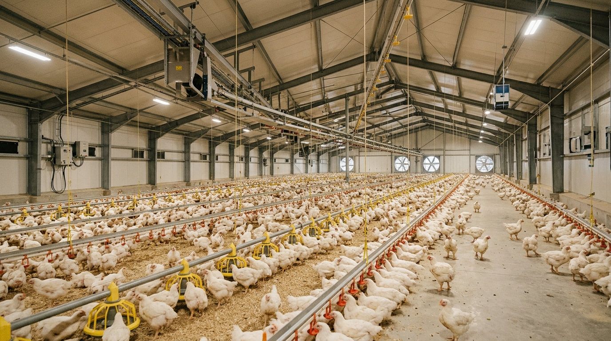
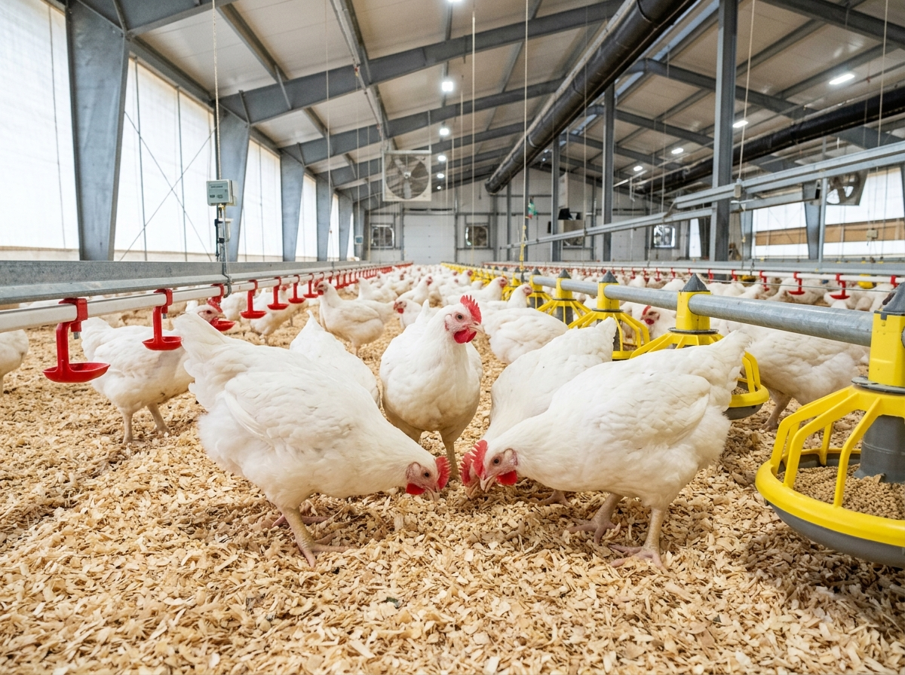
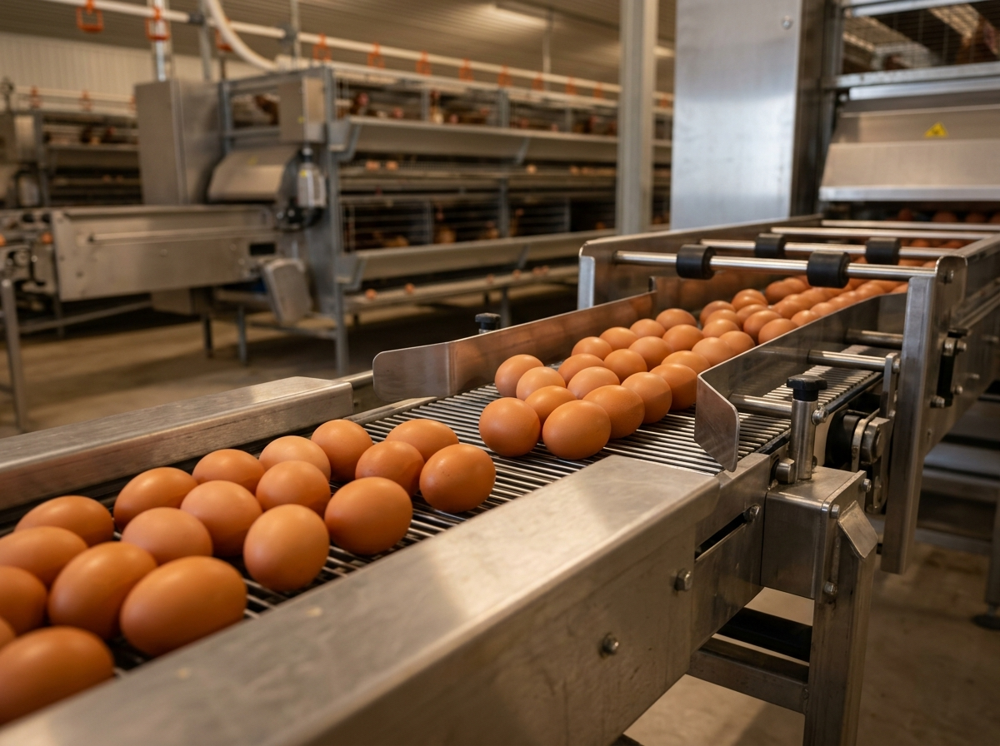

Tracking Broiler Presisi
Hitung Feed Conversion Ratio (FCR) harian & kumulatif otomatis dari konsumsi pakan vs bobot sampling ayam hidup.

Tinggalkan catatan kertas yang rentan tercecer. Kendalikan Feed Conversion Ratio (FCR), Hen-Day Production (HDP), stok pakan, dan deteksi anomali kematian unggas dalam satu sistem terintegrasi standar genetika resmi.
Setiap fitur dirancang dari pengalaman langsung di kandang: ramah satu jempol pekerja, terbaca di bawah terik matahari, dan bebas ornamen yang membingungkan.
Hitung Feed Conversion Ratio (FCR) harian & kumulatif otomatis dari konsumsi pakan vs bobot sampling ayam hidup.
Pantau persentase telur harian dari populasi layer dan bandingkan langsung dengan kurva standar strain Lohmann Brown.
Pantau suhu, kelembaban (RH), amonia, dan ventilasi kipas inverter kandang tertutup (closed house) secara realtime.
Pekerja kandang tetap bisa menginput rekaman panen tanpa sinyal. Data otomatis tersinkronisasi saat terhubung internet.

Siklus ayam pedaging berlangsung cepat (30-35 hari). Selisih 0.05 poin pada FCR dapat menentukan apakah Anda mengantongi untung belasan juta atau menelan kerugian pakan.
Mengurangi waktu hitung manual. Ketahui persis berapa ton pakan yang berhasil dihemat setiap hari siklus.
Ambang batas < 3.0% standar kemitraan. Peringatan dini jika ada lonjakan kematian mendadak per blok kandang.
Proyeksi total tonase siap angkut, kecukupan sisa pakan finisher, dan kesiapan surat jalan pengiriman.
Peternakan petelur adalah maraton jangka panjang (hingga 80+ minggu). Ketahui secara presisi kapan produktivitas ayam turun di bawah batas impas biaya pakan untuk keputusan peremajaan terbaik.
Hitung otomatis rasio butir telur terhadap populasi ayam hidup. Bandingkan dengan kurva standar Lohmann Brown.
Catat rincian telur utuh bersih (98.4%), cangkang tipis, dan abnormal untuk evaluasi efisiensi penanganan kandang.
Kontrol formulasi konsentrat layer 35%, jagung giling, dedak padi, serta persediaan rak telur siap kirim ke agen.

Bukan testimoni kosong. Hasil evaluasi nyata berdasarkan peningkatan efisiensi pakan dan stabilitas performa kandang.
"Sebelumnya catatan FCR baru dihitung setelah panen selesai, sering telat tahu kalau pakan boros. Dengan Be-Ternak, FCR terpantau harian. Siklus kemarin tembus IP 418 dan dapat bonus kemitraan penuh."
"Di petelur, menghitung konversi butir ke tray dan HDP setiap sore memakan waktu. Sekarang pekerja kandang cukup input angka via HP, laporan otomatis jadi dan siap dikirim ke pedagang telur."
"Pekerja kandang kami awalnya takut pakai aplikasi karena ribet. Ternyata tombolnya besar-besar dan ramah satu jempol. Bahkan saat listrik padam dan sinyal drop, input tetap aman tersimpan."
Hemat jutaan rupiah dari efisiensi pakan dan pencegahan kematian ayam dengan sistem pencatatan yang terbukti akurat.
Untuk peternak mandiri 1-2 kandang kapasitas hingga 10.000 ekor.
Untuk peternak semi-closed house & closed house hingga 30.000 ekor.
Untuk integrator, koperasi peternak, dan pemilik multi-farm besar.
Kelola data pakan, sampling berat, deplesi, dan kesehatan unggas dengan akurasi tinggi.
Target Standar Kemitraan: 1.54 • Hemat ~1.2 Ton Pakan
Sampling 120 ekor hari ini • ADG: 66 gr/hari
Batas Toleransi: < 3.0% • Kondisi Imunitas Prima
Umur Panen: Hari 33 • Berhak Bonus Kemitraan +
Data konsumsi pakan, deplesi, dan pertambahan bobot harian.
| Tanggal | Umur (Hari) | Pakan (Sak / Kg) | Mortalitas (Ekor) | Rata-rata Bobot (BW) | FCR Kumulatif | Suhu / RH | Status |
|---|
Standar Lohmann Brown: 92.0% • (+2.6% Unggul)
Konversi Rak Telur: 630.6 Tray (30 butir/tray)
Total Pakan: 2.100 kg • Target Standar: 114 gr/butir
Umur Saat Ini: Minggu ke-46 • Margin Masih Prima
Monitoring persentase Hen-Day Production (HDP) dan rasio telur grade A.
| Tanggal | Umur (Minggu) | Total Butir | Telur Tray (Rak) | Grade A Utuh | Retak / Abnormal | Pakan Terpakai | Hen-Day (HDP) | Status |
|---|